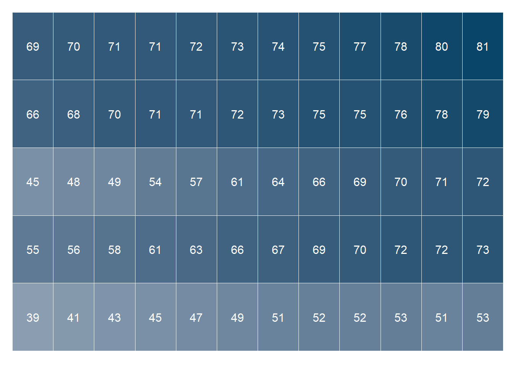

library(tidyverse) # untuk manupulasi, merapikan, & visualisasi data
library(gapminder) # untuk mengakses gapminder datasetxy_heatmap_df <- gapminder %>%
mutate(year = as.factor(year)) %>%
group_by(continent, year) %>%
summarize(MedlifeExp = round(median(lifeExp), 0))## `summarise()` has grouped output by 'continent'. You can override using the `.groups` argument.xy_heatmap <- xy_heatmap_df %>%
ggplot(aes(x = year,
y = continent,
fill = MedlifeExp)) +
geom_tile(color = '#FFFFFF') +
geom_text(aes(label = MedlifeExp),
size = 4,
color = '#FFFFFF') +
scale_fill_gradient(name = 'Median Life Expectancy',
low = '#8a9db1',
high = '#094568') +
theme_minimal() +
theme(
axis.title = element_blank(),
axis.text = element_blank(),
axis.line = element_blank(),
panel.grid.major = element_blank(),
panel.grid.minor = element_blank(),
strip.text = element_blank(),
panel.background = element_rect(fill = '#FFFFFF',
color = NA),
plot.background = element_rect(fill = '#FFFFFF',
color = '#FFFFFF'),
legend.position = 'none'
)